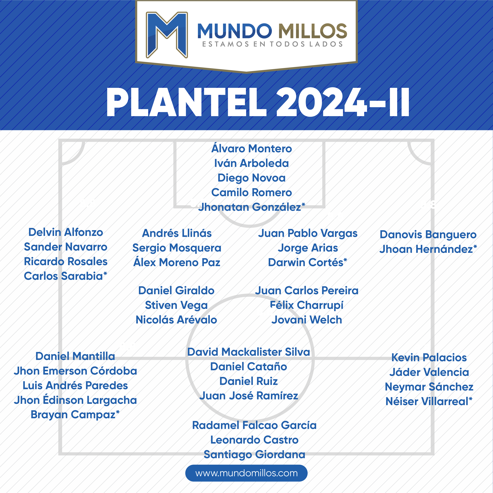

Plantilla Actual:

Las nóminas más valiosas del FPC: Nacional y Millonarios lideran
Hace poco, Transfermarkt actualizó el precio de todos los jugadores que actúan en la Liga BetPlay II-2024. Dicha revisión también modificó el costo de cada equipo (plantilla) del fútbol profesional colombiano y así, quedaron definidas cuáles son -actualmente- las nóminas más valiosas del país.
Según las cifras del mencionado portal, Atlético Nacional lidera el ranking con un valor de mercado acumulado (sumado el precio de todos los jugadores del plantel) de 21.95 millones de euros. El club antioqueño, además, cuenta con dos de los tres futbolistas más caros del FPC: Alfredo Morelos (cotizado en 3.2 M€) y Marino Hinestroza (2.5 M€).
El segundo lugar es para Millonarios, que al igual que Nacional, supera la línea de los 20 M€. Hoy en día, la plantilla del equipo bogotano está valorada en 20.38 millones de euros. El jugador más costoso del Azul es el defensa central costarricense, Juan Pablo Vargas (2 M€).